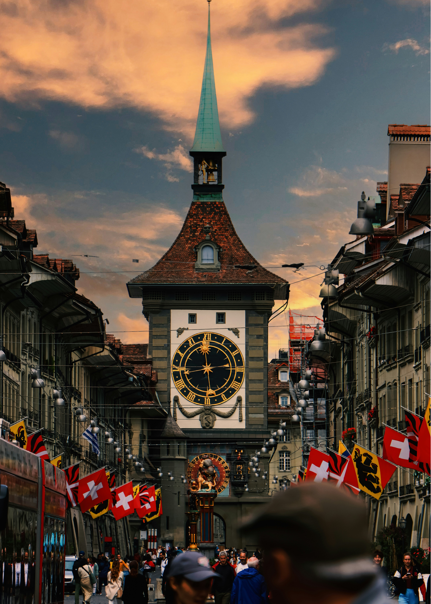
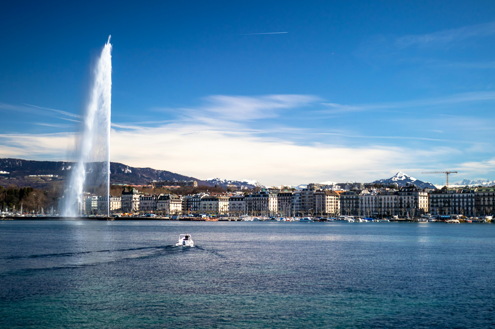
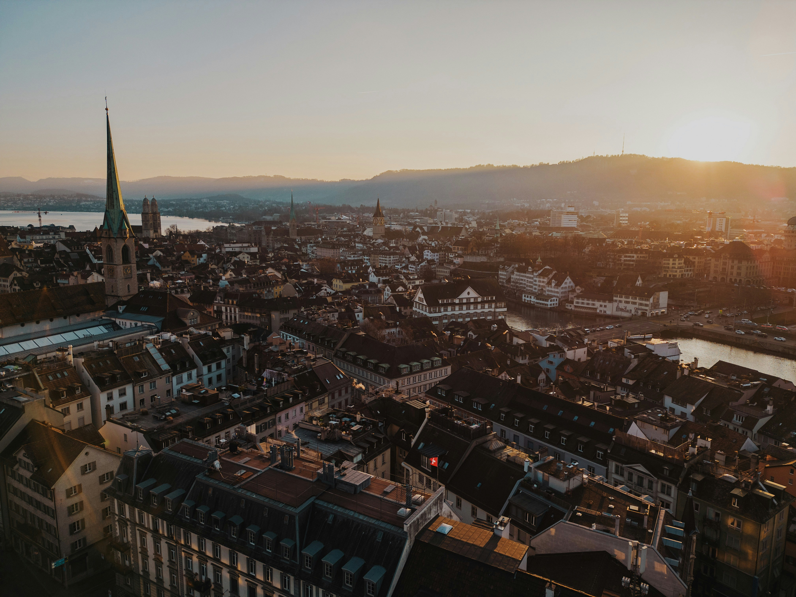
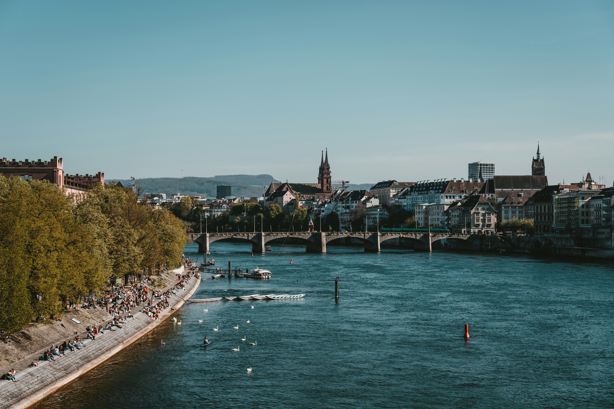

Cities
Bern

-
UNESCO Old Town: Bern's medieval city center, with cobblestone streets and arcades, is a UNESCO World Heritage site.
-
Bear Symbol: The city is named after bears, and you can still see live bears at the Bear Park.
-
Clock Tower (Zytglogge): A 13th-century clock tower with an elaborate astronomical clock that delights visitors every hour.
-
Einstein Connection: Albert Einstein lived in Bern while developing the Theory of Relativity, and his former home is now a museum.
-
Fountains Galore: Bern has over 100 historic fountains, many adorned with colorful statues from the 16th century.
Geneva

-
Jet d'Eau: One of the world's tallest fountains, shooting water 140 meters high.
-
International Hub: Home to the UN European headquarters, WHO, WTO, and the Red Cross.
-
Lakeside Beauty: Situated on Lac Léman with stunning views of the Alps and Jura mountains.
-
Flower Clock: Famous symbol of the city combining Swiss precision and botanical art.
-
Old Town Charm: Cobblestone streets, St. Pierre Cathedral, and hidden courtyards await exploration.
Zurich

-
Largest Swiss City: Zurich is the country's largest city and a global financial hub.
-
Old Town & Limmat River: Historic streets line the scenic riverbanks.
-
St. Peter's Clock: Europe's largest church clock face is here.
-
Vibrant Art & Culture: Home to world-class museums, galleries, and the annual Street Parade.
-
Shopping Paradise: Bahnhofstrasse is one of the world's most exclusive shopping streets.
Basel

-
Cultural Capital: Known for museums, art fairs, and the renowned Art Basel festival.
-
Rhine River: Scenic riverfront perfect for walking, swimming, or taking a boat cruise.
-
Historic Carnival (Fasnacht): UNESCO-recognized carnival with masks, parades, and music.
-
Old Town & Medieval Architecture: Charming squares, towers, and cobbled streets.
-
Cross-Border City: Located near France and Germany, giving it a unique tri-country vibe.
Culture
Food
Tourist Destinations
Switzerland HomePage